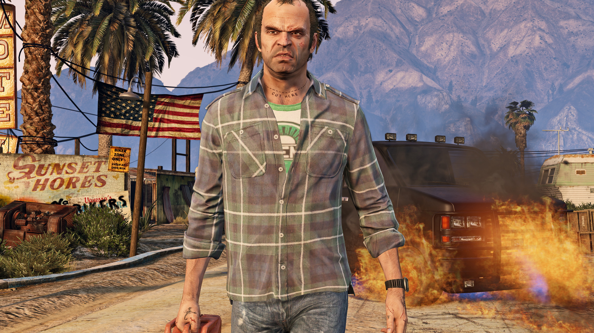
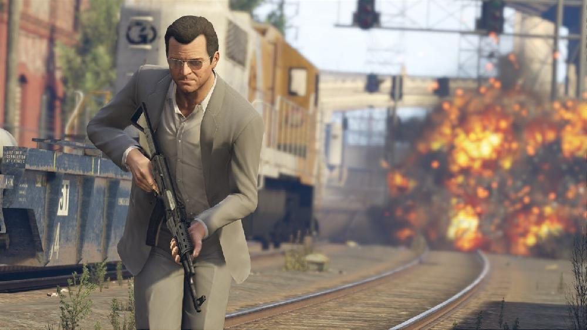
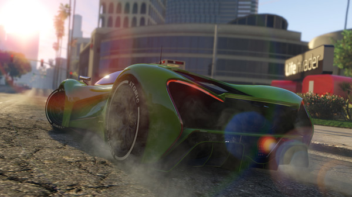
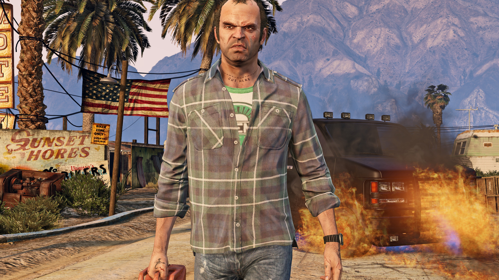
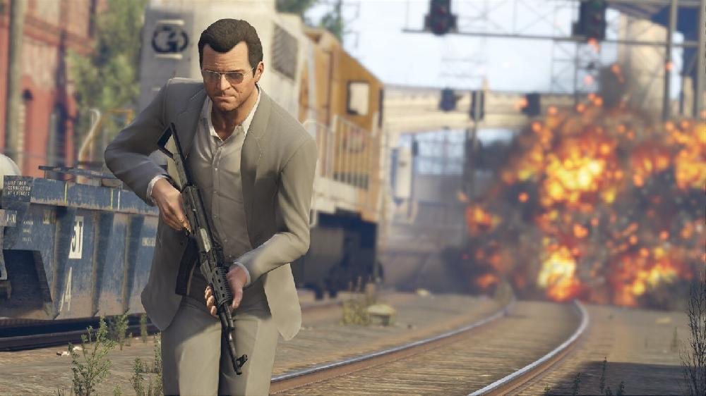
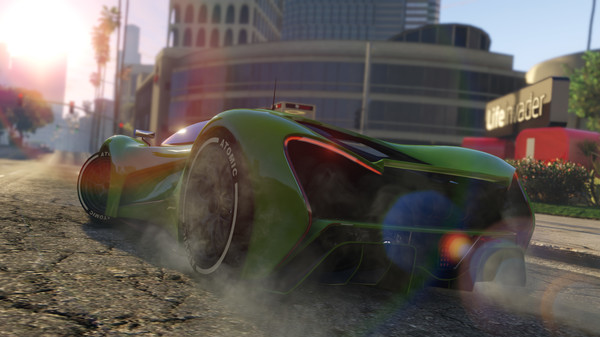

Genç bir serseri, inzivaya çekilmiş bir banka soyguncusu ve ürkütücü bir psikopat, kendilerini suç dünyasının, ABD hükümetinin ve eğlence sektörünün karışık ağlarında buluyor. Kendileri de dahil, hiç kimseye güvenemedikleri acımasız bir şehirde tehlikeli soygunlar yapmayı başarmak zorundalar.
Grand Theft Auto V'in PC sürümü, oyunculara 4k ve ötesinde çözünürlükle ve saniyede 60 kare tazeleme hızıyla Los Santos ve Blaine County dünyasını keşfetme fırsatını sunuyor.
Oyun, fare ve klavye kontrollerinin yanı sıra doku kalitesi, gölgelendirici, mozaikleme ve kenar yumuşatma gibi 25 farklı ayar dahil, PC'ye özgü birçok özelleştirme tercihi sunuyor.
Ayrıca araç ve yaya trafiği kontrolü için nüfus yoğunluğu belirleyebilme özelliği, iki veya üç monitör desteği, 3D uyumu ve tak-çalıştır kumandalar için destek de seçeneklere dahil.
Ayrıca Grand Theft Auto V'in PC sürümüne 30 oyuncu ve 2 izleyici desteğiyle Grand Theft Auto Online da dahil. Grand Theft Auto Online'ın PC sürümü, Soygunlar ve Rakip modları da dahil olmak üzere konsollarda çıktığı tarihten beri yayınlanan tüm mevcut geliştirmeleri ve Rockstar'ın oluşturduğu içeriği de içeriyor.
Grand Theft Auto V ile Grand Theft Auto Online, Birinci Şahıs Bakışı Moduyla son derece detaylı Los Santos ve Blaine County dünyasını bambaşka bir şekilde görme şansını veriyor.
Ayrıca Grand Theft Auto V'in PC sürümünde, Grand Theft Auto V ve Grand Theft Auto Online içinden video çekmek, düzenlemek ve paylaşmak için gerekli kreatif araçlardan oluşan Rockstar Editörü de mevcut. Rockstar Edötrünün Yönetmen Modu, oyuncuların göze çarpan hikâye karakterlerini, yayaları, hatta hayvanları dahi kullanarak kendi sahnelerini de çekebilmesini sağlıyor. Oyuncular, ağır çekim, hızlı çekim ve kamera filtreleri gibi düzenleme efektleriyle ve gelişmiş kamera kullanımıyla birlikte GTAV radyo kanallarından kendi şarkılarını ekleyebilecek veya oyun müziğinin çarpıcılığını dinamik olarak kontrol edebiliyor. Hazırlanan videolar, Rockstar Editörü içinden doğrudan YouTube'e ve Rockstar Games Social Club'a yüklenebiliyor.
The Alchemist ve Oh No gibi sanatçılar, yeni radyo kanalı The Lab FM'in sunucuları olarak geri dönüyor. The Lab FM, oyunun orijinal müziklerinden esinlenilen yeni ve özel şarkıları yayınlıyor. Misafir sanatçıların arasında Earl Sweatshirt, Freddie Gibbs, Little Dragon, Killer Mike, Future Islands'dan Sam Herring ve çok daha fazlası mevcut. Oyuncular, ayrıca kendi belirledikleri şarkılardan oluşan yeni radyo kanalı Self Radio ile kendi müziklerini dinlerken Los Santos ile Blaine County'yi gezebiliyor.